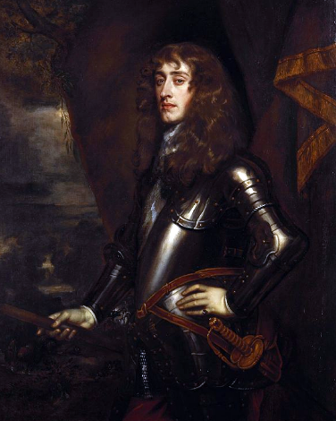

Modelul britanic. Monarhia parlamentară
Revoluția glorioasă (revoluția engleză) a impus modelul monarhiei constituționale și a deschis drumul altor mari revoluții ale epocii moderne precum Revoluția americană (1763-1791) și Revoluția franceză (1789-1799). Modelul britanic presupune concentrarea puterii spre parlament, mai multe drepturi pentru cetățeni și o scădere a puterii pe care o avea monarhia britanică. Citește acum pagina noastră pentru a vedea toate evenimentele și consecințele acestui schimb de putere.
Până în 1715, modelul statului modern era revendicat de Franța, însă balanța avea să încline spre Anglia odată cu transformările politice ce au garantat drepturile și libertățile cetățenești și au afirmat drepturile Parlamentului în timp ce puterea monarhiei a început să scadă.
Înlocuirea monarhiei ereditare
Alegerea și încoronarea ca rege al Angliei a lui Wilhelm de Orania – William al III-lea - și a soției acestuia, Maria – Maria a II-a - (1688-1702) a însemnat înlocuirea monarhiei ereditare (de drept divin) cu monarhia parlamentară (având la bază suveranitatea națiunii). După moartea reginei Maria a II-a (1694), regele William a domnit singur până la sfârșitul vieții sale (1702), urmându-i la tron regina Anna (1702-1714), fiica lui Iacob al II-lea.
În 1707, potrivit „Actelor Uniunii”, Anglia și Scoția își unesc teritoriile într-un singur stat purtând denumirea de Regatul Marii Britanii. Regina Anna va fi astfel primul suveran al regatului unit, dar va purta separat și coroana Irlandei.
Creșterea atribuțiilor Parlamentului
Regina Anna moare fără să lase urmași. Drept urmare, la tronul Angliei apare o nouă dinastie, cea de Hanovra, regina Anna fiind urmată la tron de vărul său, George I de Hanovra (1714-1727) – singura rudă de religie protestantă a reginei.
Întrucât nici George I și nici succesorul și fiul acestuia George al II-lea (1727-1760) nu cunoșteau limba engleză și ca atare nici legislația engleză, acest fapt va duce la apariția noii forme de guvernare a Consiliului de cabinet format din miniștri și consilieri care își asumau răspunderea în fața Camerei Comunelor. Parlamentul va prelua încet-încet și alte prerogative regale precum formarea ministerelor sau patronajul asupra Bisericii; va scădea astfel autoritatea regelui și va crește cea a Parlamentului. Regele lipsind frecvent la ședințele Consiliului de cabinet, s-a făcut simțită nevoia unei persoane de încredere care să prezideze aceste ședințe, nevoie regăsită în persoana lui Robert Walpole; acesta va deveni astfel întâiul prim-ministru al Marii Britanii.
George al III-lea în 1799-1800 - pictură realizată de Sir William Beechey
.jpg#/media/File:King_George_III_by_Sir_William_Beechey_(2).jpg){kind=link}
Impunerea monarhului în fața Parlamentului
Odată cu venirea la tron a lui George al III-lea (1760-1820), primul monarh al dinastiei de Hanovra care s-a născut pe tărâmurile englezești și cunoștea limba engleză, lucrurile aveau să se schimbe. George al III-lea va încerca să-și impună domnia personală și prerogativele regale, oprind Parlamentul din drumul pe care începuse să meargă, astfel încât, deși la urcarea pe tron a fost întâmpinat cu entuziasm, încet-încet și-a câștigat destul de mulți opozanți. Domnia sa a fost marcată de instabilitate politică și de numeroase conflicte militare, Anglia participând la Războiul de șapte ani (1754;1756-1763) și învingând Franța, devenind astfel puterea colonială dominantă în America de Nord și India; coloniile engleze din America vor fi însă pierdute peste câțiva ani, consecutiv Războiului de Independență (1776-1783).
În 1783 regele dovedește că poate numi prim-ministrul fără a respecta majoritatea Camerei Comunelor, chemându-l la conducerea Cabinetului pe William Pitt junior/cel Tânăr. Pe tot parcursul timpului în care Pitt a fost prim-ministru, regele George al III-lea a fost iubit de popor, însă spre sfârșitul vieții, datorită unor probleme de sănătate mentale regele va deveni incapabil să-și mai exercite atribuțiile, la tron urmându-i fiul George al IV-lea (1820-1830) - bunicul viitoarei regine Victoria a Marii Britanii.
Sistemul bipartid
Parlamentul britanic va cunoaște evoluția spre sistemul bipartidismului odată cu restaurația Stuarților, prin apariția celor două facțiuni politice care vor sta la baza partidelor moderne engleze: tory – viitorul partid conservator și whig – viitorul partid liberal. Gruparea tory era adeptă a Stuarților, în special a lui Iacob al II-lea (fiind numiți de aceea și iacobiți), alcătuită din marea nobilime, conservatoare și susținătoare a monarhiei autoritare. Gruparea whig, era adversară a Stuarților, alcătuită din burghezie și clasa de mijloc, era anticatolică și puritană, susținând supremația Parlamentului.
Cele două partide britanice vor constitui astfel fundamentul sistemului de guvernământ englez, garantul democrației parlamentare, întrucât la guvernare ajungea partidul ce câștiga majoritatea, fiind însă ținut atent sub observație de celălalt partid rămas în opoziție. Alternanța la guvernare va feri sistemul de devierile absolutiste.
Revoluția glorioasă a fost înfăptuită prin colaborarea facțiunilor tory și whig, dar secolul al XVIII-lea în timpul primilor monarhi hanovrieni va cunoaște o puternică afirmare a grupării whig; acestei grupări i-a aparținut și Robert Walpole, întâiul prim-ministru al Marii Britanii (1721-1742).
Modelul monarhiei constituționale
Principala consecință a acestei Revoluții glorioase va fi faptul că Anglia va deveni astfel monarhie constituțională – prima de acest fel din epoca modernă. În lipsa unei Constituții propriu-zise, conducerea statului britanic era realizată prin intermediul legilor elaborate în funcție de necesitățile momentului și care vor suplini astfel lipsa acestui act fundamental. În noul sistem de guvernare puterea regală era diminuată, spunându-se pe bună dreptate că „regele domnea, dar nu guverna”. Sistemul presupunea separarea puterilor în stat: puterea legislativă, puterea executivă și puterea judecătorească.
Puterea legislativă era deținută de Parlament împreună cu regele. Parlamentul este principalul factor politic în stat, fiind împărțit în două camere: Camera Lorzilor și Camera Comunelor (numită și a Reprezentanților întrucât era eligibilă). Parlamentul era ales inițial pe 3 ani, apoi din 1716 pe 7 ani și avea ca și atribuții votarea legilor, aprobarea bugetului și misiunea de a controla guvernul. Camera Lorzilor era condusă de (membru al guvernului și președintele Curții Supreme de Apel). Camera Comunelor reprezintă în fapt puterea legislativă a Parlamentului, membrii săi fiind aleși prin vot universal; cel care conducea dezbaterile purta sugestiv numele de „speaker”. Dreptul de dizolvare al Camerei aparține formal monarhului, însă de facto regele răspunde cererii efectuate de primul-ministru în acest sens.

Iacob al II-lea, portret realizat de Peter Lely
.png#/media/File:James_II,_when_Duke_of_York_(1633-1701).png){kind=link}
Regele avea atribuția de a numi primul-ministru și de a sancționa legile aprobate de Parlament, neavând însă dreptul să le abroge. Suveranul avea dreptul (formal) de a dizolva Camera Comunelor, de a înmâna diverse ordine și distincții, de a declara război și de a încheia pace sau tratate. Orice act emis de rege trebuia obligatoriu contrasemnat de ministrul de resort. De asemenea, regele păstrează rolul de șef al bisericii anglicane.
Puterea executivă era deținută de Cabinet, care era constituit din miniștri partidului majoritar în Camera Comunelor. Cabinetul era condus de primul-ministru, acesta având menirea de a prezida ședințele și de a prelua în mâinile sale politica statului, substituindu-se astfel regelui (fapt logic dacă ne gândim că funcția de prim-ministru a apărut în momentul în care regele a renunțat să mai participe la ședințele Cabinetului). În atribuțiile sale intră desemnarea miniștrilor și misiunea de a aduce la cunoștința regelui hotărârile guvernului. Guvernul răspundea în fața Parlamentului.
Puterea judecătorească era exercitată prin intermediul instituțiilor judecătorești.
Afirmarea Imperiului Britanic ca mare putere
Transformări economice
Transformările care au cuprins Anglia nu au fost numai de natură politică, Marea Britanie parcurgând în secolele XVII-XVIII o puternică dezvoltare și din punct de vedere economic, agricultura, industria, comerțul luând amploare.
Agricultura
Întrucât populația Angliei era în continuă creștere, agricultura a trebuit să țină pasul și să se dezvolte în așa fel încât să reușească să acopere nevoile populației. Astfel, se va dezvolta și generaliza sistemul „împrejmuirilor” prin intermediul cărora nobilii reușesc să creeze adevărate ferme capitaliste producătoare de materii prime. „Împrejmuirea” terenurilor va duce la o delimitare clară a proprietăților, luând amploare practicarea agriculturii fără pârloage, proprietarii terenurilor agricole fiind impulsionați să se preocupe mai mult de proprietățile lor și de modul în care puteau obține beneficii: utilizarea de îngrășăminte precum praful de oase și gunoiul de grajd, apariția utilajelor precum mașinile de semănat, secerat și treierat etc. În anul 1793, ca răspuns la intensele preocupări agricole, se va înființa Comitetul pentru agricultură, care avea rolul de a oferi sfaturi pertinente agricultorilor britanici. Deși suprafața agricolă a Marii Britanii nu era însemnată, ea a reușit să devină în scurt timp unul din grânarele Europei.
Industria
O evoluție asemănătoare înregistrează și industria engleză, ea dezvoltându-se inițial în preajma surselor de materii prime, un adevărat progres înregistrându-se în ce privește industria textilă, cu precădere cea care prelucra lâna (dezvoltată în zonele unde se creșteu oi). Un real avânt iau și mineritul prin exploatările subterane de cupru, fier, cărbune și metalurgia, în preajma minelor.
Comerțul
Actele de navigație au dus la dezvoltarea comerțului maritim și astfel, implicit, la emanciparea flotei și a porturilor engleze. În acest context Londra, Bristol, Liverpool sunt doar câteva exemple de orașe britanice ce devin adevărate antrepozite pentru produsele importate, care erau apoi revândute în întrega Europă și contribuie la dezvoltarea economică a Marii Britanii, dar și la cea personală a negustorilor englezi.
Hegemonia maritimă și colonială
Supremația Marii Britanii începe încă din anul 1588 prin înfrângerea armatei spaniole (Armada Spaniola) în lupta pentru exploatarea bogățiilor oferite de Lumea Nouă, Anglia reușind să se afirme ca o nouă putere militară în plină expansiune. Actele de navigație vor duce la intrarea în conflict cu cea care era considerată „cărăușa mărilor” - Olanda - și la războaiele din 1652-1674, în urma cărora Anglia reușește să își consolideze statutul maritim. O altă putere europeană cu care Marea Britanie avea să își dispute pentru mult timp de acum înainte dominația maritimă, comercială și colonială va fi Franța. Războiul pentru succesiunea la tronul Spaniei se va încheia prin pacea de la Utrecht în 1713, fiind semnate tratate între Marea Britanie, Franța, Spania, Olanda, potrivit cărora rolul de arbitru în politica europeană îi revenea Marii Britanii de acum înainte și nu Franței.
O prevedere deosebit de importantă a păcii de la Utrecht este cea prin care Gibraltarul este cedat de Spania Marii Britanii și astfel îi asigura acesteia accesul liber la Marea Mediterană. Războiul de șapte ani (1754; 1756-1763), încheiat cu Tratatul de la Paris, va duce la decăderea politico-militară a Franței atât în Europa, cât și în America și va propulsa Marea Britanie ca fiind puterea colonială dominantă. În urma acestui război Anglia va prelua de la Franța celebrele colonii din India și Canada și putem afirma că acesta este momentul înființării Imperiului Britanic. Anglia va pune, prin cuceririle sale, bazele celei mai mari puteri coloniale, însă acest fapt presupunea noi responsabilități financiare și politice.
Coloniile engleze din America de Nord își vor câștiga independența, pierderea coloniilor americane conducând inevitabil la transformări importante ale Imperiului Britanic, acesta îndreptându-și atenția spre est, spre India. Secolul al XIX-lea va reprezenta poate perioada cea mai înfloritoare a Imperiului Britanic, acesta învățând din experiențele anterioare și adoptând un sistem administrativ și politic mai organizat. India va deveni punctul de reper al economiei britanice, în acest scop Marea Britanie cucerind sudul Africii și colonizând Australia, ajungând spre sfârșitul secolului al XIX-lea să colonizeze aproximativ un sfert din suprafața terestră a globului.